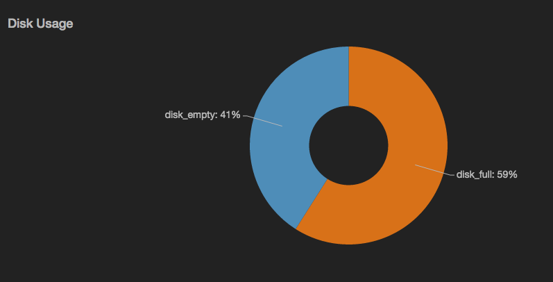
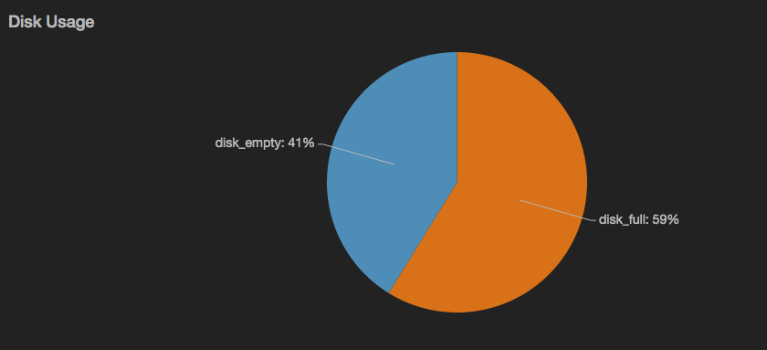

piechart
Render data as a pie or donut chart.

view piechart -o {
categoryField: 'fieldname',
id: 'string',
title: 'string',
valueField: 'fieldname',
radiusInner: n,
sliceLabels: {
nameField: fieldname',
valueField: 'fieldname',
valueFormat: 'd3FormatString'
}
}
or
view piechart -categoryField 'fieldname' -id 'string' -title 'string' -valueField 'fieldname' -messageField 'fieldname' -sliceLabels.nameField 'auto'|'fieldname' -sliceLabels.valueField 'auto'|'fieldname' -sliceLabels.valueFormat 'auto'|'d3FormatString' -radiusInner n
See Defining sink parameters for an explanation of how sink parameters can be expressed as object literals.
| Parameter | Description | Required? |
|---|---|---|
-categoryField |
The name of the field to use as the category accessor. Categories are displayed in the order in which they appear in the data stream, clockwise. | Yes |
-id |
An identifier for this sink that serves as a handle for referencing the object in Juttle syntax; conceptually identical to a variable name | No |
-title |
The title for the user-visible output, if it has one; the value may be any valid Juttle expression that produces a string | No; defaults to the name field that is present in all metrics points |
-valueField |
The name of the field to use as the source for the numeric values | No; defaults to the value field that is present in all metrics points. If no value field is present, the first numeric field in the stream is used. |
-radiusInner |
Optionally, you can use this parameter to display the pie chart as a wheel with an inner radius specified in pixels | No; default is 0 |
-sliceLabels.nameField |
The field containing an alternative name label for each slice | No; default is the value of -categoryField |
-sliceLabels.valueField |
The field containing an alternative value label for each slice | No; default is the value of -valueField |
-sliceLabels.valueFormat |
The format for the value label, using the d3 number formatting syntax | No; default is .2f |
Example: Render a simple donut chart showing disk utilization
read stochastic -source 'cdn' -last :1h: -source_type 'metric' name='disk'
| reduce disk_full = last(value)
| put disk_empty = 1 - disk_full
| split
| view piechart -title 'Disk Usage' -sliceLabels.valueFormat '%'
